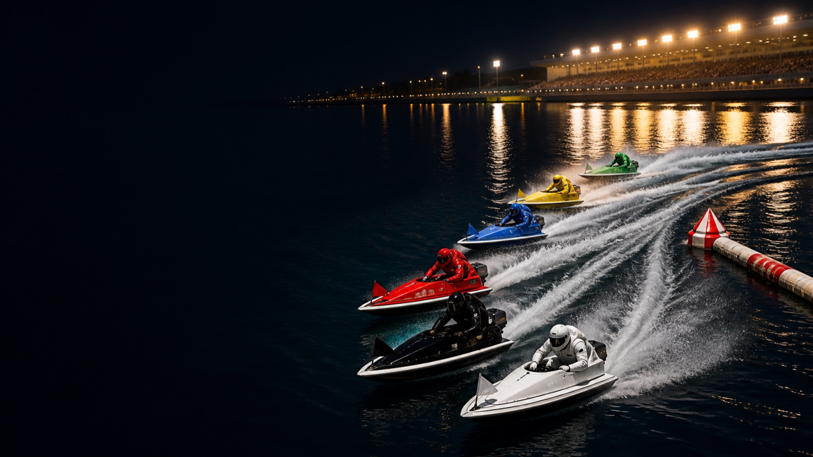

01
選手・モーター・気象を比較
全国・当地の実績、モーター2連率、コース実績、直前情報を艇ごとに並べて確認。気象庁アメダスの実測も分析に取り込みます。

iPhone app / App Store審査中
BoatSim
レース情報、選手、モーター、気象を読み解き、6艇の攻防をスタートから決着まで立体的に再生する競艇AI分析アプリです。
RACE ANALYSIS, MADE VISIBLE
艇ごとの比較や買い目だけでは、レースで何が起きると見ているのかが伝わりにくい。BoatSimは分析結果を、順位・タイムライン・カメラ切替を備えた3Dレースとして再生します。見た予想を、終わったあとに同じ画面で検証できます。
WHAT BOATSIM DOES
全国・当地の実績、モーター2連率、コース実績、直前情報を艇ごとに並べて確認。気象庁アメダスの実測も分析に取り込みます。
スタート、1マーク、決着までの展開をタイムラインに沿って再生。中継・追走・全体の視点を切り替えながら、順位の入れ替わりを追えます。
終了レースでは、AI予想・シミュレーション・結果・払戻を同じ流れで確認。過去レースは無料で、まず体験から始められます。
FROM DATA TO RACE
出走表、選手、モーター、気象、直前情報をレースごとに照合。
予想時点の条件をもとに、艇ごとの勝率と買い目を組み立てます。
固定したレースシナリオを、だれが見ても同じ流れで振り返れます。
ACTUAL APP SCREENS
画面をタップすると拡大できます。数値や払戻は、対象レースの実データにより変わります。
AVAILABILITY
アプリはApp Store公開に向けて審査申請済みです。公開後は、このページからApp Storeへの案内を追加します。いまはWeb版で締切後のレースを無料で確認できます。
Web版で終了レースを試すFOR A RESPONSIBLE EXPERIENCE
BoatSimは情報・エンターテインメント用途のアプリです。アプリ内で舟券の購入、投票、入出金はできません。
表示内容はレース情報をもとにした分析・シミュレーションであり、実際のレース結果や利益を保証するものではありません。
締切後・終了レースは無料で閲覧できます。分析と結果の違いを、自分のペースで確かめられます。